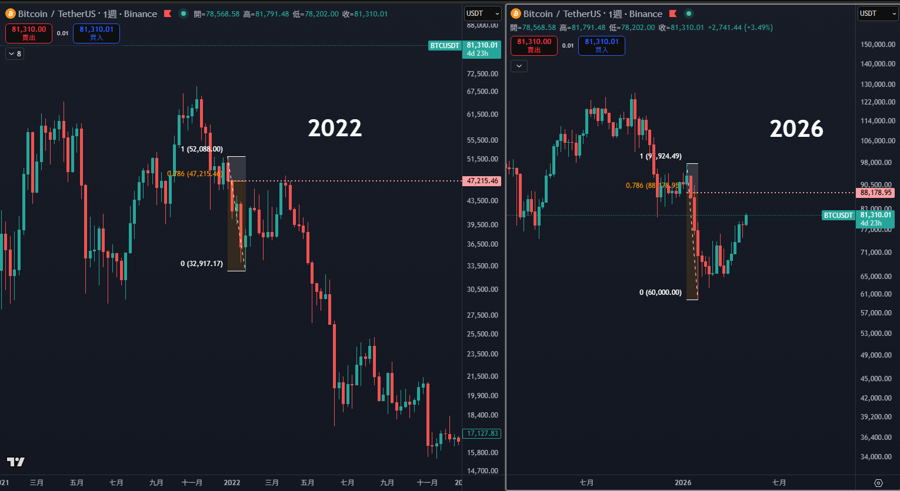
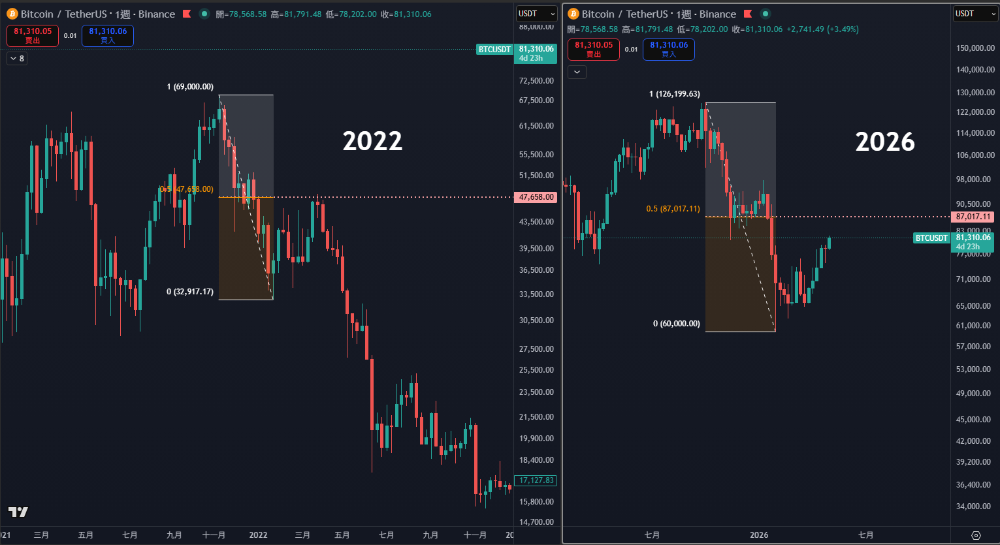

技術分析有一個常被忽略的鐵律：當不同工具、不同畫法指向同一個價格區，這個區位的可信度會呈倍數放大。過去一週，BTC 從 12.6 萬美元的歷史高點滑落到 6 萬美元附近後，產生一波技術性反彈。我們把這次反彈擺進費波那契回撤工具裡測量，得到一個讓人坐直身體的觀察 — 不管你用「擺盪頂」還是「實際週期頂」當錨點，反彈都精準停在 87K 附近，而 BTC 至今仍未能站穩在這個區間之上。這個結構特徵，與 2022 年牛轉熊第一段反彈高度相似。
一、回顧 2022：牛轉熊第一段下跌後的反彈，被精準釘死
先看歷史。2021 年 11 月 BTC 在 69,000 美元見頂，正式結束 COVID 大牛市。第一段下跌把價格打到 32,917 — 這是當時市場恐慌情緒的第一波宣洩。隨後 BTC 進入一段技術性反彈，持續了約四個月。
這段反彈停在哪裡？我們用兩種費波那契畫法測量：


畫法一：以「下跌中段擺盪頂」為費波那契起點
第一張圖採用較保守的擺盪取點 — 把 1 設在 52,088（圖上標註的中段反彈高點，Binance 週線），0 設在 32,917（第一段下跌底）。在這個取點下，0.786 回撤位於 47,215 美元。實際走勢顯示，BTC 反彈精準觸及這個位置後拒絕，隨後展開長達一年的二次熊市，最終於 2022 年 11 月 FTX 事件期間跌至 15,500 美元附近。
畫法二：以「完整週期高低點」為費波那契起點
第二張圖採用更宏觀的擺盪取點 — 把 1 設在 69,000（牛市實際頂部），0 一樣設在 32,917。在這個取點下，0.5 回撤位於 47,658 美元。同一波反彈、同一個拒絕點，但在這個畫法下落在「黃金中位」位置。
價差不到 450 美元。兩種完全不同的測量方式，把同一個反彈頂部夾在 1% 區間內。
這不是巧合，這是結構性共振 — 當兩個獨立的測量框架收斂到同一個價位，這個價位就從「主觀畫線」升級為「客觀結構」。
二、2026：歷史正在以驚人的精度重演
2026 年初，BTC 從 126,199.63 的歷史高點滑落到 60,000 區間，這是一段相似於 2022 年的「牛轉熊第一段下跌」。同樣地，價格在 6 萬附近停穩、產生反彈。問題是 — 這次的反彈會被釘在哪裡？
我們把同樣的兩種畫法套用在 2026 圖上：
| 畫法 | 錨點 1（高） | 錨點 0（低） | 關鍵回撤 | 關鍵價位 |
|---|---|---|---|---|
| 畫法一 下跌中段擺盪 |
99,924.49 | 60,000.00 | 0.786 | 88,178.95 |
| 畫法二 週期高低點 |
126,199.63 | 60,000.00 | 0.5 | 87,017.11 |
| 共振區間 | 兩種畫法價差約 1,162 美元（誤差 1.3%） | 87,000 – 88,200 | ||
對照當前實際走勢：BTC 在這次反彈觸及這個區間後，價格再度滑落、目前回到 81,310 附近震盪。不同的擺盪、不同的回撤比例，再次指向同一個拒絕區。而市場到目前為止，尚未能在這個位置取得突破。
需要強調的是：兩種畫法因共享低點而存在數學上的天然鄰近性，真正關鍵的不是「兩條線靠近」本身，而是「市場在這個鄰近區實際出現拒絕價格行為」 — 前者是幾何，後者才是訊號。
三、為什麼兩種畫法會收斂？背後的數學
這不是神秘學，是費波那契比例的內建幾何性質。當你選的「短擺盪」與「長擺盪」共享同一個低點（0），那麼：
- 短擺盪的 0.786 = 47,215：相當於從 32,917 往上拉 75% 到 52,088 的位置
- 長擺盪的 0.5 = 47,658：相當於從 32,917 往上拉 41% 到 69,000 的位置
兩條路徑、不同的 1 點、不同的比例，但因為短擺盪的 1 本身就介於長擺盪的 0 和 1 之間，數學上會自然產生「比例疊加」的收斂效應。當這兩種畫法同時出現拒絕現象，代表這個價位不只是技術線交叉，更是兩種市場記憶（不同投資人群的成本錨）的共同壓力區。
2022 年的反彈被卡在這個雙重共振區，47,215 / 47,658 兩條獨立的線收斂到不到 1% 的距離 — 然後 BTC 在這裡折返、開啟長達一年的尋底過程。2026 的當前結構，把整個錨點往上平移到 87,000 / 88,179，依然收斂在 1.3% 區間內，依然被市場精準守住。
在 2026 年，這個共振區是否同樣是結構轉折，市場還在用價格行為自己回答。
四、兩個重要說明（避免誤讀）
1. 這不是時間預測
本文不預測 BTC 會在何時、跌到何處。歷史模式即使重演，也常以非線性方式進行。2022 那次，BTC 在 47,000 拒絕後並非一路向下 — 中間反覆掙扎了三個月才正式破前低。2026 是否會重演同一節奏、或以更快/更慢的速度展開，沒有任何指標能精準告訴你。
2. 共振是強訊號，但不是 100%
雙費波那契共振是統計上極具參考性的拒絕區，但任何技術分析工具的勝率都不是 100%。市場結構可能因為：
- 外部宏觀變數（利率政策、AI 敘事意外推進、地緣政治）
- 結構性買盤介入（ETF 持續吸籌、機構大額部位）
- 跨市場連動（美股突破刷新預期、美元走勢）
而推翻技術結構。專業交易者該做的不是迷信任何單一訊號，而是用客觀價格行為驗證或推翻假設。如果 BTC 確實守住 87-88K 這個共振區並向下確認，本文的結構推論成立；如果價格強力突破並站穩在 88,200 之上，這個拒絕區就會升級為支撐，本文的觀察就需要重新評估。
五、不同處境的讀者，可以思考什麼問題？
本文不提供操作建議，但讀完之後，不同處境的讀者可以問自己一個對應的問題：
- 持有現貨在 60K 以下成本的人：上方共振區若確認為結構性天花板，自己的風險管理計劃是什麼？什麼條件下會分批，什麼條件下繼續持有？這些規則是否在進場時就已經寫好？
- 近期高位（80-100K）追進的人：「等更高再賣」這個假設，建立在什麼客觀依據上？如果共振拒絕成立，你預先設計的應對方案是什麼？誠實面對成本，是不是比預測明天更重要？
- 場外觀望的人：自己進場的客觀觸發訊號是什麼？在訊號出現前，是否需要急著做決定？「等待客觀訊號」對觀望者而言，是天然的優勢還是浪費的機會？
這三個問題沒有標準答案，答案因每個人的資金狀況、風險承受度、交易週期而異。本文僅提供結構觀察，不構成任何個別化的投資建議。
六、結語：學會看「結構」，比預測「方向」更值錢
2022 與 2026 的對照給我們的核心啟示，不是「BTC 會不會跌」這個答案 — 而是「市場結構會在數學上自我重複」這個現象本身。費波那契只是工具，重點是學會用多個獨立框架交叉驗證同一個價位。當共振出現，操作的勝率就會顯著提升。
市場不會準確告訴你頂部與底部，但它會用結構說話。能聽懂這套語言的人，跟只看新聞、只追漲殺跌的人，最終會在不同的地方下車。
本文僅為市場研究與教育用途，不構成任何投資建議。所有圖表為 CTA 研究團隊使用 TradingView 工具的個人標註，數值取自 Binance 週線。技術分析有其侷限，過去模式不保證未來重演。請依個人風險承受度做決策。